-
Boucles à la cannelle
-
Crêpe mince
-
Crêpes
-
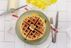
Gaufres -
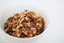
Granola -
Pain doré
-
 Bananes plantains frites
Bananes plantains frites -
Salade d'artichauts feta et dattes
-
Sauce nems
-
Potage à la citrouille
-
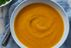
Potage à la courge butternut -
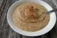
Soupe aux patates et haricots blancs -
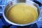
Soupe de pois cassés verts -
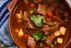
Boeuf africain -
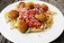
Boulettes de pois chiches -
Cigares aux choux
-
Courge spaghetti aux champignons, feta et bacon
-
Curry Thaï crémeux aux patates douces
-
Dal aux lentilles corail
-
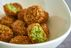
Falafels -
Hamburger aux haricots noirs et riz
-
Hotdog au tofu panné
-
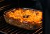
Lasagne végé -
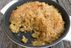
Macaroni au fromage à la courge butternut -
Mapo tofu
-
 Pain de viande
Pain de viande -
Pain de viande végé
-
Pizza tomate et ail
-
Pizza végétarienne
-
Plat d'aubergines et pois chiches
-
Poulet champignons à la chinoise
-
Pâté chinois végétarien
-
Pâté mexicain végé
-
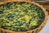
Quiche aux épinards -
Ragoût Loville
-
Riz au quinoa et curcuma
-
Riz espagnol
-
Salade russe
-
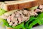
Sandwich au thon -
Tacos végés
-
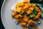
Tofu au beurre -
Tofu général tao
-
Tofu magique selon Loounie
-
Tofu mariné au balsamique
-
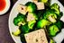
Tofu à la vapeur -
Biscuits au son
-
Biscuits aux amandes
-
Biscuits aux brisures de chocolat
-
Biscuits aux dattes et canneberges
-
Biscuits de fantaisie au chocolat
-
Biscuits de pâte aux raisins secs
-
Biscuits tendres aux brisures de chocolat
-
Biscuits à l'avoine et aux raisins secs
-
Biscuits à la crème sure
-
Brownies au chocolat
-
Bûche de noël
-
Carrés coco et cerise
-
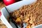
Croustade aux pommes -
Galettes au chocolat
-
Galettes à la mélasse
-
Gâteau au chocolat
-
Gâteau au gruau et au sucre à la crème
-
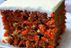
Gâteau aux carottes -
Gâteau blanc
-
Madeleines au miel
-
Mille-feuilles
-
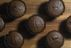
Muffins au chocolat -
Muffins aux bleuets
-
Muffins aux brisures de chocolat
-
Muffins aux framboises
-
Muffins aux pommes et à la cannelle
-
Muffins à l'avoine et aux bleuets
-
Muffins à la crème sûre et à la cannelle
-
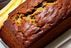
Pain aux bananes -
Petits gâteaux à la forêt noire
-
Pets-de-soeur
-
Poe banane
-
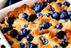
Pouding au pain -
Pouding aux fraises
-
Pouding chômeur
-
Sucre à la crème
-
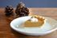
Tarte au sucre -
Tarte aux pommes
-
Tarte à la citrouille et à l'érable
-
Citronade
-
Piña Colada
-
Ail des bois mariné
-
Aïoli chinoise sucrée
-
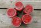
Confiture aux fraises crues -
Confiture de caneberge
-
Galettes de Sarrasin
-
Ketchup maison
-
Pain blanc à la machine à pain
-
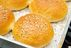
Pain à hamburger -
Pain à hotdog
-
Purée de courge poivrée
-
Pâte brisée (beurre)
-
Pâte brisée (à ma maman)
-
Pâte à pizza
-
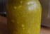
Relish maison -
Sauce à pizza
-
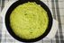
Trempette aux artichauts